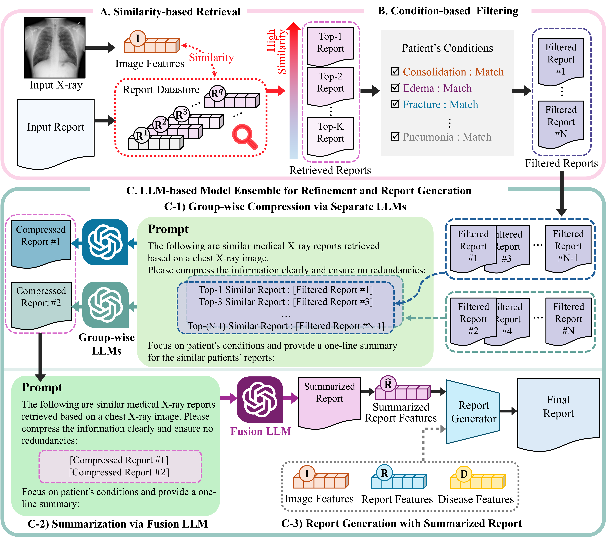

|
SangJun Park I am currently Master Student at MAILAB, Korea University (Advisor: Prof. Tae-Eui Kam) since March 2023, where I focus on Medical AI, Multi-Modal, and Generative Model. Prior to Korea University, i worked 2021-2023 as a research intern at AIDML, Incheon National University (Advisor: Prof. Daejin Choi), conducted research on Drug Discovery, specifically on predicting Protein-Ligand Binding Affinity. |

|
Announcements
25/04/10: I’m pleased to announce that our paper, “Group-wise Compression and Summarization via LLM-based Ensemble for Chest X-ray Report Generation,” has been accepted to the IEEE EMBC (Engineering in Medicine and Biology Society) Conference. I’m looking forward to the opportunity to meet you in the Denmark this July!
25/02/27: I’m happy to share that our work, “DART: Disease-aware Image-Text Alignment and Self-correcting Re-alignment for Trustworthy Radiology Report Generation,” has been accepted to the top-tier conference CVPR 2025 (IEEE/CVF Conference on Computer Vision and Pattern Recognition). I’m looking forward to the opportunity to meet you in the U.S. this June!
24/12/05: I'm excited to announce that our paper, “Improving Binding Affinity Prediction by Emphasizing Local Features of Drug and Protein,” has been accepted to the journal "Computational Biology and Chemistry". I am deeply grateful to Prof. Daejin Choi for his leadership throughout this research.
23/02: I’m pleased to share that I will be joining the Master Student at Korea University, under the supervision of Prof. Tae-Eui Kam at Medical Artificial Intelligence Laboratory.
21/12: I’m pleased to share that I will be joining the Undergraduate Research Intern at Incheon National University, under the supervision of Prof. Daejun Choi at Human-centered Artificial Intelligence Laboratory. |
ResearchI'm interested in Medical AI, Multi-Modal, Generative Model. Under review papers here: CV. |

|
DART: Disease-aware Image-Text Alignment and Self-correcting Re-alignment for Trustworthy Radiology Report Generation
Sang-Jun Park*, Keun-Soo Heo*, Dong-Hee Shin, Young-Han Son, Ji-Hye Oh, and Tae-Eui Kam *Equal contribution IEEE/CVF Conference on Computer Vision and Pattern Recognition (CVPR), 2025 Paper PDF We propose disease-aware image-text alignment, ensuring the capture of critical disease-relevant findings in X-ray images. Building on this, we introduce self-correction mechanism by re-aligning the image-text embedding space for truthworthy report generation. |
|

|
Group-wise Compression and Summarization via LLM-based Ensemble for Chest X-ray Report Generation
Sang-Jun Park, Keun-Soo Heo, Bogyeong Kang, Minjoo Lim, WooHyeok Choi, and Tae-Eui Kam IEEE Engineering in Medicine and Biology Society (EMBC), 2025 Paper PDF We propose a retrieval-augmented two-step LLM ensemble that first filters retrieved reports using patient-specific disease information and then progressively summarizes them into a clinically coherent report while preserving key diagnostic findings. |

|
Improving binding affinity prediction by emphasizing local features of drug and protein
Daejin Choi and Sang-Jun Park Computational Biology and Chemistry, 2025 Paper PDF We propose a deep learning model that accurately estimates drug-target binding affinity by emphasizing local features of molecules and protein sequences. To achieve this, we design Multi-Stream GCN and CNN modules that capture local structural and sequential relationships. |
Patent
A system and method for automatically generating chest X-ray reports using deep learning-based similar data retrieval
Deep Learning-Based Contrastive Learning for Automated Chest X-ray Report Generation |
|
Credit: Jon Barron. |